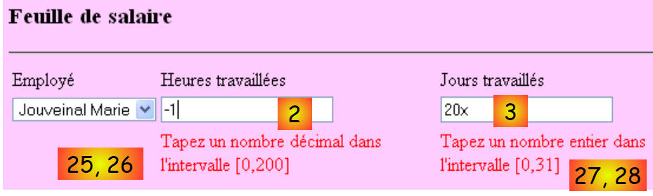

4. A aplicação [SimuPaie] – versão 1 – ASP.NET
4.1. Introduction
Pretendemos criar uma aplicação .NET que permita a um utilizador realizar simulações de cálculo da remuneração das amas da associação «Maison de la petite enfance» de um município.
O formulário ASP.NET para o cálculo do salário terá o seguinte aspeto:

A aplicação ASP.NET terá a seguinte arquitetura:
 |
- aquando da primeira solicitação feita à aplicação, é instanciado um objeto do tipo [Global], derivado do tipo [System.Web.HttpApplication]. É este objeto que irá utilizar o ficheiro de configuração [web.config] da aplicação web e armazenar em cache determinados dados da base de dados (operação 0 acima).
- Na primeira solicitação (operação 1) feita à página [Default.aspx], que é a única página da aplicação, o evento [Load] é processado. Nele, é tratado o preenchimento da lista suspensa dos funcionários. Os dados necessários para a lista suspensa são solicitados ao objeto [Global], que os armazenou em cache. Trata-se da operação 2 acima. A operação 4 envia a página assim inicializada ao utilizador.
- Quando é solicitada a cálculo do salário (operação 1) na página [Default.aspx], o evento [Load] é novamente processado. Nada é feito, pois trata-se de um pedido do tipo POST, e o gestor [Pam_Load] foi programado para não realizar nenhuma ação neste caso (utilização do valor booleano IsPostBack). Depois de o evento [Load] ser processado, é o evento [Click] no botão [Salaire] que é processado a seguir. Este último necessita de dados que não foram armazenados em cache no [Global]. Por isso, o gestor do evento solicita-os à base de dados. Trata-se da operação 3 acima referida. O cálculo do salário é então efetuado e a operação 4 envia os resultados ao utilizador.
4.2. O projeto Visual Web Developer 2008
 |
- em [1], cria-se um novo projeto
- em [2], do tipo [Web / Application Web ASP.NET]
- em [3], atribui-se um nome ao projeto
- em [4], especifica-se o seu nome e, em [5], a sua localização. Será criada uma pasta [c:\temp\pam-aspnet\pam-v1-adonet] para o projeto.
 |
- em [5], o projeto Visual Web Developer
- em [6], as propriedades do projeto (clique com o botão direito do rato no projeto / Propriedades / Aplicação).
- em [7], o nome do assembly que será produzido pela geração do projeto
- em [8], o espaço de nomes predefinido que pretendemos utilizar para as classes do projeto. A classe [_Default], definida nos ficheiros [Default.aspx.cs] e [Default.aspx.designer.cs], foi criada no espaço de nomes [pam_v1_adonet], derivado do nome do projeto. É possível alterar este espaço de nomes diretamente no código destes dois ficheiros:
[Default.aspx.cs]
using System;
....
namespace pam_v1
{
public partial class _Default : System.Web.UI.Page
{
[Default.aspx.designer.cs]
//------------------------------------------------------------------------------
// <gerado automaticamente>
// Este código foi gerado por uma ferramenta.
// Versão do runtime: 2.0.50727.3603
//
// As alterações feitas neste ficheiro podem causar um comportamento incorreto e serão perdidas se
// o código for regenerado.
// </auto-generated>
//------------------------------------------------------------------------------
namespace pam_v1 {
public partial class _Default {
.........
A marcação do ficheiro [Default.aspx] também deve ser alterada:
 |
<%@ Page Language="C#" AutoEventWireup="true" CodeBehind="Default.aspx.cs" Inherits="pam_v1._Default" %>
...
O atributo Inherits acima refere-se à classe definida nos ficheiros [Default.aspx.cs] e [Default.aspx.designer.cs]. Neles é utilizado o espaço de nomes pam_v1.
4.2.1. O formulário [Default.aspx]
O aspeto visual do formulário [Default.aspx] é o seguinte:
 |
Os componentes são os seguintes:
N.º | Tipo | Nome | Função |
DropDownList | ComboBoxEmployes | Contém a lista dos nomes dos funcionários | |
TextBox | TextBoxHeures | Número de horas trabalhadas – número real | |
TextBox | TextBoxJours | Número de dias trabalhados – número inteiro | |
Botão | ButtonSalaire | Solicita o cálculo do salário | |
TextBox | TextBoxErreur | Mensagem informativa destinada ao utilizador ReadOnly=true, TextMode=MultiLine | |
Rótulo | LabelNom | Nome do funcionário selecionado em (1) | |
Rótulo | LabelPrénom | Nome próprio do funcionário selecionado em (1) | |
Rótulo | LabelAdresse | Morada | |
Etiqueta | LabelVille | Cidade | |
Rótulo | LabelCP | Código postal | |
Rótulo | LabelIndice | Índice | |
Rótulo | LabelCSGRDS | Taxa de contribuição CSGRDS | |
Rótulo | LabelCSGD | Taxa de contribuição CSGD | |
Rótulo | LabelRetraite | Taxa de contribuição para a reforma | |
Rótulo | LabelSS | Taxa de contribuição para a Segurança Social | |
Rótulo | LabelSH | Salário-base por hora para o índice indicado em (11) | |
Rótulo | LabelEJ | Subsídio diário de subsistência para o índice indicado em (11) | |
Rótulo | LabelRJ | Subsídio diário de refeição para o índice indicado em (11) | |
Rótulo | LabelCongés | Taxa de subsídio de férias pagas a aplicar ao salário base | |
Rótulo | LabelSB | Montante do salário base | |
Rótulo | LabelCS | Montante das contribuições sociais a pagar | |
Rótulo | LabelIE | Montante das pensões de pensão de alimentos para o filho a cargo | |
Rótulo | LabelIR | Montante das ajudas de custo para refeições da criança acolhida | |
Rubrica | LabelSN | Salário líquido a pagar ao(à) trabalhador(a) |
O formulário contém ainda dois campos do tipo [Panel]:
contém o componente (5) TextBoxErreur | |
contém os componentes (6) a (24) |
Um componente do tipo [Panel] pode ser tornado visível ou não por programação, graças à sua propriedade booleana [Panel].Visible.
4.2.2. Verificação dos dados introduzidos
Para calcular um salário, o utilizador:
- seleciona um funcionário em [1]
- introduz o número de horas trabalhadas em [2]. Este número pode ser decimal, como 2,5 para 2 h 30 min.
- introduz o número de dias trabalhados em [3]. Este número é inteiro.
- solicita o salário através do botão [4]
 |
Quando o utilizador introduz dados errados em [2] e [3], estes são verificados assim que o utilizador muda de campo de introdução. Assim, a captura de ecrã abaixo foi obtida antes mesmo de o utilizador clicar no botão [Salaire]:
 |
São necessárias duas condições para obter o comportamento anterior:
- os componentes de validação devem ter a propriedade EnableClientScript definida como «verdadeiro»:
 |
- o navegador que exibe a página deve ser capaz de executar o código JavaScript incorporado numa página HTML.
Se o navegador do cliente não verificar por si próprio a validade dos dados, estes só serão verificados quando o navegador enviar os dados introduzidos no formulário para o servidor. Será então o código localizado neste último, que processa o pedido do navegador, que verificará a validade dos dados. Recorde-se que esta verificação deve ser sempre efetuada, mesmo que a página apresentada no navegador do cliente inclua código JavaScript que realize essa mesma verificação. Com efeito, o servidor não pode ter a certeza de que o pedido POST que lhe é enviado provém realmente dessa página e que, por conseguinte, a verificação dos dados foi efetuada.
A lista de validadores é a seguinte:
N.º | Tipo | Nome | Função |
RequiredFieldValidator | RequiredFieldValidatorHeures | verifica se o campo [2] [TextBoxHeures] não está vazio | |
RangeValidator | RangeValidatorHeures | verifica se o campo [2] [TextBoxHeures] é um número real no intervalo [0, 200] | |
RequiredFieldValidator | RequiredFieldValidatorJours | verifica se o campo [3] [TextBoxJours] não está vazio | |
RangeValidator | RangeValidatorJours | verifica se o campo [3] [TextBoxJours] é um número inteiro no intervalo [0,31] |
Tarefa a realizar: construir a página [Default.aspx]. Primeiro, colocar-se-ão os dois contentores [PanelErreurs] e [PanelSalaire] para, em seguida, poder colocar neles os componentes que devem conter.
4.2.3. As entidades da aplicação
 |
Depois de lidas, as linhas das tabelas [cotisations], [employes] e [indemnites] serão colocadas em objetos do tipo [Cotisations], [Employe] e [Indemnites], definidos da seguinte forma:
namespace Pam.Entites
{
public class Cotisations
{
// propriedades automáticas
public double CsgRds { get; set; }
public double Csgd { get; set; }
public double Secu { get; set; }
public double Retraite { get; set; }
// construtores
public Cotisations()
{
}
public Cotisations(double csgRds, double csgd, double secu, double retraite)
{
CsgRds = csgRds;
Csgd = csgd;
Secu = secu;
Retraite = retraite;
}
// ToString
public override string ToString()
{
return string.Format("[{0},{1},{2},{3}]", CsgRds, Csgd, Secu, Retraite);
}
}
}
namespace Pam.Entites
{
public class Employe
{
// propriedades automáticas
public string SS { get; set; }
public string Nom { get; set; }
public string Prenom { get; set; }
public string Adresse { get; set; }
private string Ville { get; set; }
private string CodePostal { get; set; }
private int Indice { get; set; }
// fabricantes
public Employe()
{
}
public Employe(string ss, string nom, string prenom, string adresse, string codePostal, string ville, int indice)
{
SS = ss;
Nom = nom;
Prenom = prenom;
Adresse = adresse;
CodePostal = codePostal;
Ville = ville;
Indice = indice;
}
// ToString
public override string ToString()
{
return string.Format("[{0},{1},{2},{3},{4},{5},{6}]", SS, Nom, Prenom, Adresse, Ville, CodePostal, Indice);
}
}
}
namespace Pam.Entites
{
public class Indemnites
{
// propriedades automáticas
public int Indice { get; set; }
public double BaseHeure { get; set; }
public double EntretienJour { get; set; }
public double RepasJour { get; set; }
public double IndemnitesCP { get; set; }
// fabricantes
public Indemnites()
{
}
public Indemnites(int indice, double baseHeure, double entretienJour, double repasJour, double indemnitesCP)
{
Indice = indice;
BaseHeure = baseHeure;
EntretienJour = entretienJour;
RepasJour = repasJour;
IndemnitesCP = indemnitesCP;
}
// identidade
public override string ToString()
{
return string.Format("[{0}, {1}, {2}, {3}, {4}]", Indice, BaseHeure, EntretienJour, RepasJour, IndemnitesCP);
}
}
}
4.2.4. Configuração da aplicação
O ficheiro [Web.config] que configura a aplicação será o seguinte:
<?xml version="1.0" encoding="utf-8"?>
<configuration>
<configSections>
...
</configSections>
<connectionStrings>
<add name="dbpamSqlServer2005" connectionString="Data Source=.\SQLEXPRESS;AttachDbFilename=C:\data\...\dbpam.mdf;User Id=sa;Password=msde;Connect Timeout=30;" providerName="System.Data.SqlClient"/>
</connectionStrings>
<appSettings>
<add key="selectEmploye" value="select NOM,PRENOM,ADRESSE,VILLE,CODEPOSTAL,INDICE from EMPLOYES where SS=@SS"/>
<add key="selectEmployes" value="select PRENOM, NOM, SS from EMPLOYES"/>
<add key="selectCotisations" value="select CSGRDS,CSGD,SECU,RETRAITE from COTISATIONS"/>
<add key="SelectIndemnites" value="select INDICE,BASEHEURE,ENTRETIENJOUR,REPASJOUR,INDEMNITESCP from INDEMNITES"/>
</appSettings>
<system.web>
<!--
Définissez compilation debug="true" pour insérer des symboles
de débogage dans la page compilée. Comme ceci
affecte les performances, définissez cette valeur à true uniquement
lors du développement.
-->
<compilation debug="false">
...
</configuration>
- linha 9: define a cadeia de ligação à base de dados SQL Server anterior
- linhas 13-16: definem as consultas SQL utilizadas pela aplicação, de modo a evitar que sejam fixadas no código.
- linha 13: a consulta SQL é configurada. A notação do parâmetro é específica do servidor SQL.
Tarefa a realizar: introduzir estes parâmetros no ficheiro [Web.config]. A linha 9 deverá ser adaptada ao caminho real da base de dados [dbpam.mdf].
4.2.5. Inicialização da aplicação
A inicialização de uma aplicação ASP.NET é efetuada pelo ficheiro [Global.asax.cs]. Este ficheiro é estruturado da seguinte forma:
 |
- no [1], adiciona-se um novo elemento ao projeto
- em [2], adiciona-se a classe de aplicação global, que por predefinição se denomina [Global.asax] [3]
 |
- em [4], o ficheiro [Global.asax] e a classe associada [Global.asax.cs]
- em [5], é apresentada a marcação de [Global.asax]
<%@ Application Codebehind="Global.asax.cs" Inherits="pam_v1.Global" Language="C#" %>
A classe [pam_v1.Global] está definida no ficheiro [Global.asax.cs]. Para o nosso caso, será definida da seguinte forma:
using System;
using System.Collections.Generic;
using System.Configuration;
using System.Data.SqlClient;
using Pam.Entites;
namespace pam_v1
{
public class Global : System.Web.HttpApplication
{
// --- dados estáticos da aplicação ---
public static Employe[] Employes;
public static Cotisations Cotisations;
public static Dictionary<int, Indemnites> Indemnites = new Dictionary<int, Indemnites>();
public static string Msg = string.Empty;
public static bool Erreur = false;
public static string ConnectionString = null;
// inicialização da aplicação
public void Application_Start(object sender, EventArgs e)
{
...
try
{
// início de sessão
ConnectionString = ...
using (SqlConnection connexion = new SqlConnection(ConnectionString))
{
connexion.Open();
// recupera-se a lista de funcionários, que é colocada na matriz estática [Employes]
...
// recuperam-se as taxas de contribuição na variável estática [Cotisations]
...
// recuperam-se os subsídios no dicionário estático [Indemnites]
...
// concluído com sucesso
Msg = "Base chargée...";
}
}
catch (Exception ex)
{
// regista-se o erro
Msg = string.Format("L'erreur suivante s'est produite lors de l'accès à la base de données : {0}", ex);
Erreur = true;
}
}
}
}
- linhas 20: o método [Application_Start] é executado no arranque da aplicação web. É executado apenas uma vez.
- linhas 12-17: campos públicos e estáticos da classe. Um campo estático é partilhado por todas as instâncias da classe. Assim, se forem criadas várias instâncias da classe [Global], todas elas partilham o mesmo campo estático [Employes], acessível através da referência [Global.Employes], c.a.d. [NomDeClasse].ChampStatique. [Global] é o nome de uma classe. Trata-se, portanto, de um tipo de dados. Este nome é arbitrário. A classe deriva sempre de [System.Web.HttpApplication].
Voltemos à nossa classe [Global]. Podemos questionar-nos se é necessário declarar os seus campos como estáticos. Na verdade, parece que, em certos casos, podemos ter várias instâncias da classe [Global], o que justifica tornar estáticos os campos que têm de ser partilhados por todas essas instâncias.
Existe outra forma de partilhar dados com âmbito «aplicação» entre as diferentes páginas de uma aplicação web. Assim, a tabela Employes dos funcionários poderia ser armazenada no procedimento Application_Start da seguinte forma:
Application.Add("employes",Employes);
[Application] é, por predefinição, em qualquer aplicação ASP.NET, uma referência a uma instância da classe definida por [Global.asax.cs]. Application é um contentor capaz de armazenar objetos de qualquer tipo. A matriz Employes poderia, em seguida, ser recuperada no código de qualquer página da aplicação web da seguinte forma:
Employe[] employes=Application.Get["employes"] as Employe[];
Como o contentor Application armazena objetos de qualquer tipo, obtém-se um tipo Object que tem de ser posteriormente convertido. Este método continua a ser utilizável, mas partilhar dados através de campos estáticos tipados do objeto [Global] evita as conversões de tipo e permite que o compilador efetue verificações de tipo que ajudam o programador. É este o método que será utilizado aqui.
Os dados partilhados por todos os utilizadores são os seguintes:
- linha 12: o tabuleiro de objetos do tipo [Employe] que armazenará a lista simplificada (SS, NOM, PRENOM) de todos os funcionários
- linha 13: o objeto do tipo [Cotisations], que armazenará as taxas de contribuição
- linha 14: o dicionário que armazenará as indemnizações relacionadas com os diferentes índices dos funcionários. Será indexado pelo índice do funcionário e os seus valores serão do tipo [Indemnites]
- linha 15: uma mensagem a indicar como terminou a inicialização (com sucesso ou com erro)
- linha 16: um valor booleano que indica se a inicialização terminou com um erro ou não.
- linha 17: a cadeia de ligação à base de dados.
Pergunta: complete o código da classe [Application_Start].
4.3. Os eventos do formulário [Default.aspx]
4.3.1. O procedimento [Page_Load]
Quando o formulário [Default.aspx] é carregado, este procura na tabela [Global.Employes] (linha 12) os nomes dos funcionários para os colocar na lista suspensa [1]:
 |
- a lista suspensa [1] foi preenchida
- o TextBox [5] indica que a base de dados foi lida corretamente
Se ocorreram erros de inicialização ao iniciar a aplicação, o TextBox [5] indica-o:

Pergunta: escrever o procedimento [Page_Load] da página web [Default.aspx] que, quando executado no arranque da aplicação, garante o funcionamento anterior.
4.3.2. O cálculo do salário
Ao clicar no botão [4], é executado o gestor:
protected void ButtonSalaire_Click(object sender, System.EventArgs e)
Este gestor começa por verificar a validade dos dados introduzidos em [2] e [3]. Se algum dos dois estiver incorreto, o erro é sinalizado tal como foi mostrado anteriormente. Depois de as entradas [2] e [3] terem sido verificadas e consideradas válidas, a aplicação deve apresentar dados adicionais sobre o utilizador selecionado em [1], bem como o seu salário (ver captura de ecrã no parágrafo 4.1).
Questão: escreva o código do procedimento [ButtonSalaire_Click].